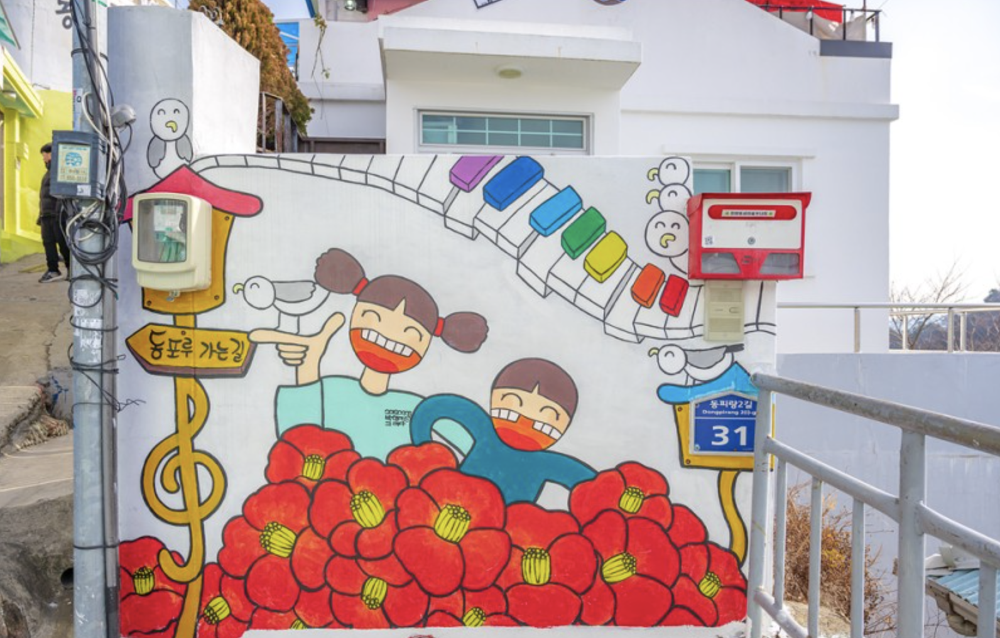
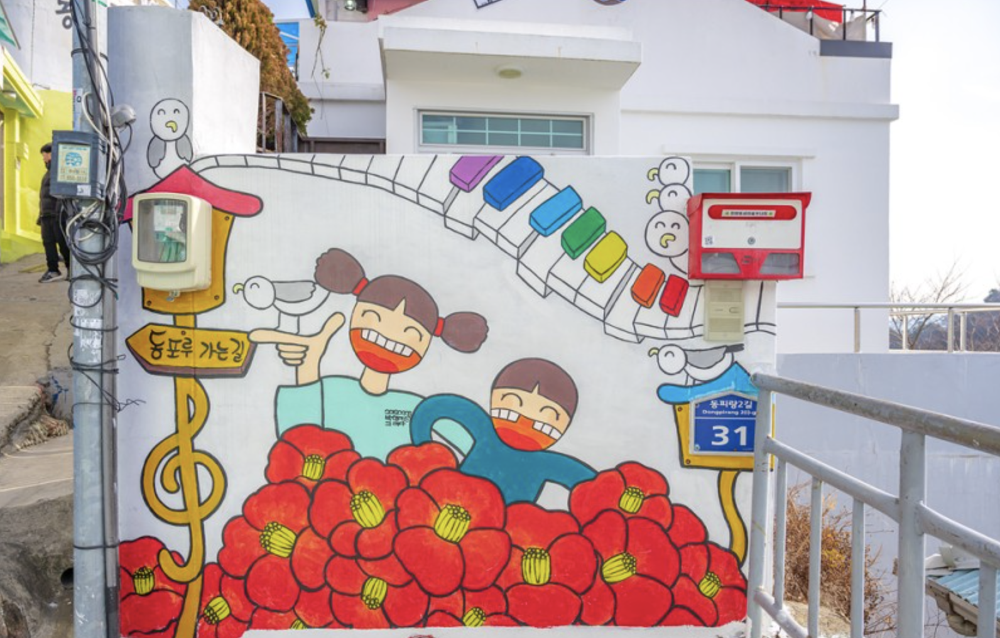

네 번째 맞는 동피랑 벽화전은 더 넓은 세상 속으로 '점프' 했다. 지난달 25일 시작해 1일까지 작업을 마감하고 2일 작품전 공식 오프닝을 갖는 2014 동피랑 벽화전은 4회째를 맞아 '동피랑 벽화비엔날레'로 명칭을 바꾸고 여러 가지 면에서 도약을 시도했다. 먼저 이번 동피랑 벽화전은 벽화작품들의 전반적인 완성도가 높아졌다는 평이다. 예상보다 많은 응모자가 몰려 자유공모부문에서는 약 3대 1의 경쟁률까지 기록하고 심사를 통해 무성의하거나 자작이 아닌 벽화 시안을 걸러내었으며, 이를 통해 68개 팀이 선정됐다. 여기에 기획공모와 초청 벽화제작팀까지 더해 벽화작품의 전반적인 완성도가 지난 3회까지보다 '점프'했다. 더불어 동피랑과 벽화전 자체의 주목도가 높아졌다. 해외 벽화작가들의 참여와 공모 심사로 '비엔날레'로 격상했으며, 기간 동안 벽화 제작 뿐 아니라 심포지엄, 특별공연 등으로 다채로운 내용이 되며 전국단위 매체에서 이슈로 다뤘다. 또한 시민참여도가 '점프'했다. 시민 공동벽화조각보는 관광객과 시민들이 부담 없이 벽화에 참여할 수 있는 프로그램으로, 작은 판넬에 그림을 그린 것을 모아 조각보와 같은 형태로 벽화를 완성하는 공동작업을 진행하며 시민들의 큰 호응을 얻고 있다. 벽화마을의 '원조'격인 동피랑은 무엇보다도 2년에 한번씩 열리는 벽화전 자체로 타 지역의 '벽화마을'과 차별화되고 있다. 수성 페인트를 사용해 낡고 빛이 바래는 거리벽화의 한계에 역발상으로 도전, 2년에 한번 벽화를 새로 그리는 것을 개성있는 이벤트로 만들어낸 것이다. 특히 이번 벽화전에서는 '세월호 추모의 벽'부터, 벽화 작품들도 세상과 소통하는 메시지를 담은 벽화들이 많다는 평. 여기에 심포지엄 개최로 거리벽화의 사회적 의미까지 생각하며 이번 동피랑 벽화전은 세상 속으로 뛰어들었다. 출처 : 한산신문(http://www.hansannews.com)